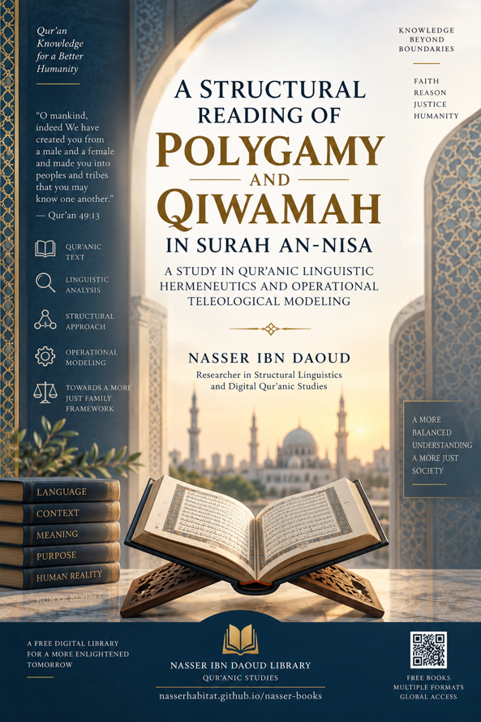

Nasser Ibn Dawood

Text extracted from the author-supplied Word edition; consult the original source.
Preparing the reader…
NASSER IBN DAOUD LIBRARY
Qur’anic Studies • Structural Reading • Operational Modeling
A Structural Reading of the Verses
on Polygamy and Qiwamah
in Surah An-Nisa
A Condensed Conceptual Adaptation in English
A Study in Qur’anic Linguistic Hermeneutics
and Operational Teleological Modeling
Nasser Ibn Daoud
Condensed English Edition • 2026
nasserhabitat.github.io/nasser-books/
I. The Global Knowledge Manifesto
Knowledge is a universal right. The author firmly believes that wisdom should not be locked behind paywalls or language barriers.
Global Access Policy
All books in this library are available for free in multiple digital formats (PDF, HTML, DOCX, TXT).
The Digital Library
As of early 2026, the collection hosts 68 volumes (34 in Arabic and 34 in English), fully optimized for AI-assisted research and digital archiving.
Official Platforms
Main Website:
nasserhabitat.github.io/nasser-books/
GitHub: nasserhabitat/nasser-books
II. Translator’s Note: The Bridge of Meaning
This English edition is a condensed conceptual adaptation. It is not a word-for-word translation, but rather an “extraction of essence.” It presents the core philosophical framework in accessible English, omitting the exhaustive linguistic debates and classical references found in the original Arabic text.
For the academic researcher: The original Arabic version remains the primary source for comprehensive linguistic analysis, detailed exegesis (Tafsir), and the complete bibliography.
The English text therefore preserves the book’s terminology, argumentative architecture, and principal conclusions while reducing technical repetition. Where the Arabic study advances a strong interpretive claim, the English edition presents it as the study’s proposed structural reading rather than as an uncontested scholarly consensus.
Contents
III. Extended Abstract
1. General Introduction
2. Research Problem, Questions, and Method
3. Chapter One — Qur’anic Linguistic Hermeneutics and Structural Analysis
4. Textual Atomism and the Problem of Fragmentation
5. The Structural Meaning of Key Terms
6. Chapter Two — Conditional Structure and Morphological Analysis
7. The Orphans Clause as a Conditional Gate
8. The Functional Reading of Mathna, Thulatha, and Ruba‘
9. Chapter Three — Systemic Symmetry and Institutional Safeguards
10. Qist and ‘Adl: Two Different Functions
11. The Closed Constraint Loop: Verses 3 and 129
12. Judicial Authorization and Institutional Governance
13. Chapter Four — From Permission to Responsibility: Polygamy and Qiwamah